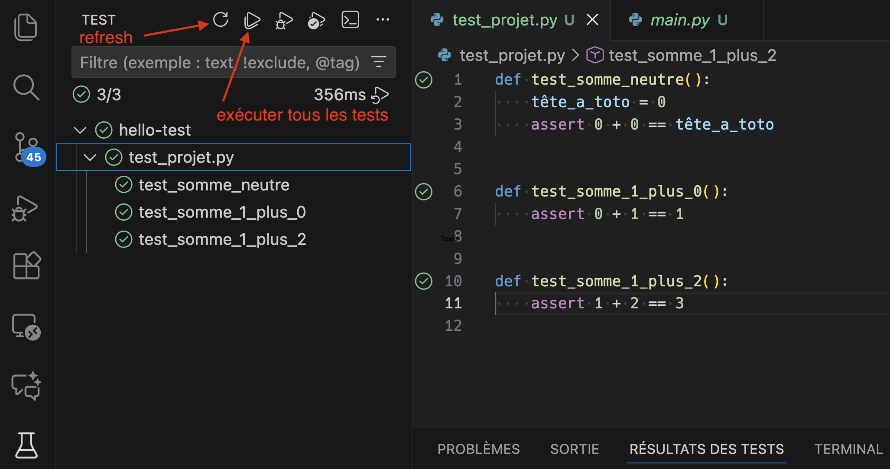
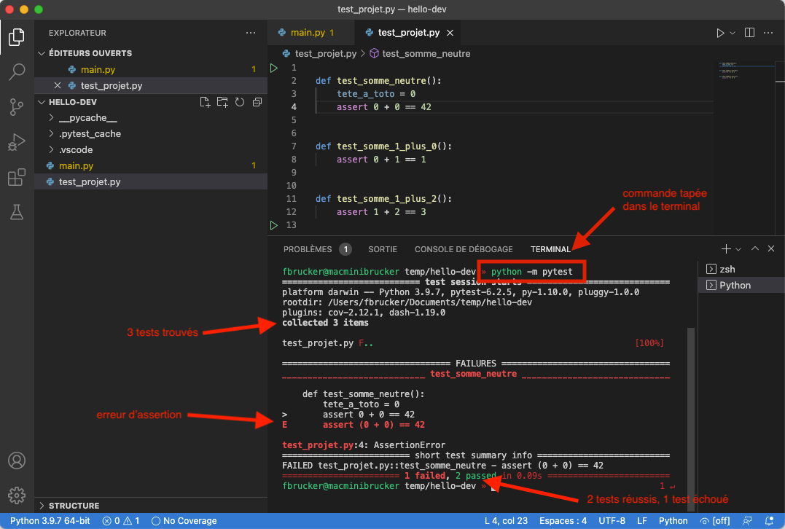
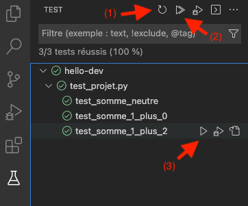

Créer des tests
Les tests permettent de vérifier que notre code fonctionne. Ils font partie du programme et on peut s'y référer quand on veut. Lorsque l'on modifie le code, on pourra toujours exécuter tous les tests pour vérifier que notre programme fonctionne aussi bien qu'avant. Les tests font partie intégrante du projet : ils garantissent que votre programme fonctionne maintenant, et pas seulement au moment où vous avez écrit vos tests.
On y reviendra à de nombreuses reprises :
Les tests sont la pierre angulaire d'une bonne programmation : ils garantissent le fonctionnement de votre code et qu'il ne peut pas régresser.
Les tests sont de petites fonctions dont le but est de tester une fonctionnalité du programme (souvent le résultat de l'exécution d'une fonction). Le test consiste en une assertion que l'on veut être vraie si que le code fonctionne. Si l'assertion est fausse c'est qu'il y a un bug.
On va créer un projet pour comprendre comment tout ça fonctionne.
Nous allons préparer le projet dans lequel nous allons coder. Ceci se fait avec vscode en ouvrant un dossier. Ce dossier sera le départ de votre projet et s'appelle workspace.
- Commencez par créer le dossier
hello-testdans un explorateur de fichier - dans vscode, choisissez : "fichier > ouvrir le dossier..." puis naviguez jusqu'à votre dossier
hello-test. On vous demande si vous faites confiances aux auteurs, puisque c'est vous dites oui. - créez un fichier
main.pycontenant uniquement la ligneprint("bonjour")
Exécutez le fichier main avec vscode et le terminal pour vérifier que tout fonctionne.
La commande assert
On utilise en python la commande assert pour vérifier que quelque chose est correct. Elle fonctionne ainsi :
assert <expression logique>Si l'expression logique est vraie, le programme continue sans rien dire et si l'expression logique est fausse, le programme s'arrête avec l'erreur : AssertionError.
Essayons ça avec la plus simple des expressions logiques : True.
-
allez dans menu Fichier > Nouveau Fichier
-
et sauvez le de suite : menu Fichier > Enregistrer avec le nom
test_projet.py -
écrivez-y le code suivant :
print("avant l'assert") assert True print("après l'assert") -
Exécutez-le.
Lorsque vous exécutez ce fichier, vous devez obtenir le résultat suivant :
avant l'assert
après l'assertLa condition logique étant vraie, la commande assert n'a rien fait.
Changeons ça en mettant une condition logique fausse :
Modifiez test_projet.py pour qu'il contienne le code :
print("avant l'assert")
assert False
print("après l'assert")
Exécutez le fichier test_projet.py.
Vous devez obtenir le résultat suivant :
avant l'assert
Traceback (most recent call last):
File "/Users/fbrucker/Documents/temp/hello-dev/test_projet.py", line 3, in
assert False
AssertionError La première ligne a bien été exécutée (on voit écrit avant l'assert), puis le programme a planté. La condition logique étant fausse, la commande assert a levé une exception nommée AssertionError qui a stoppé l'exécution du programme. La ligne print("après l'assert") n'a pas été exécutée.
D'habitude, nos expressions logiques vérifie qu'un comportement observé (l'exécution d'une fonction) est conforme au comportement théorique (le résultat qu'on aimerait avoir). Pour ne pas se perdre on range ce test dans une fonction dont le nom décrit le test. Par exemple, testons la somme :
Modifiez test_projet.py pour qu'il contienne le code :
# Définitions des tests
def test_somme_neutre():
tête_a_toto = 0
assert 0 + 0 == tête_a_toto
def test_somme_1_plus_0():
assert 0 + 1 == 1
def test_somme_1_plus_2():
assert 1 + 2 == 3
# Exécution des tests
test_somme_neutre()
test_somme_1_plus_0()
test_somme_1_plus_2()Exécutez le fichier test_projet.py.
Pour tester la somme, j'ai décidé de faire 3 tests :
- le cas le plus simple où il ne se passe rien (
0 + 0 = 0) - un cas simple (
0 + 1 = 1) - un cas général (
1 + 2 = 3)
Lorsque l'on exécute ce code, il ne se passe rien : les fonctions se sont exécutées sans erreurs
Modifiez la fonction test_somme_neutre du fichier test_projet.py pour qu'elle soit égale à :
# ...
def test_somme_neutre():
tête_a_toto = 0
assert 0 + 0 == 42
# ...Exécutez le fichier test_projet.py.
On a coutume de mettre des # ... pour dire que le reste du code du fichier n’est pas changé.
Ce n’est pas la peine de les copier/coller.
Le code ne fonctionne plus et stope avec le message :
❯ python ./test_projet.py
Traceback (most recent call last):
File "./test_projet.py", line 25, in <module>
test_somme_neutre()
~~~~~~~~~~~~~~~~~^^
File "./test_projet.py", line 12, in test_somme_neutre
assert 0 + 0 == 42
^^^^^^^^^^^
AssertionError
On voit que :
- l'exécution de la fonction
test_somme_neutre()a causé une erreur - l'assertion
assert 0 + 0 == 42a provoqué une erreur.
Si l'on corrige notre test (en remettant assert 0 + 0 == tête_a_toto) et que conserve ce fichier. On pourra l'exécuter régulièrement pour vérifier que la somme fonctionne toujours !
Ce n'est cependant pour l'instant pas très pratique :
- si tout se passe bien on a pas de retour
- il faut explicitement exécuter les fonctions de tests (on peut en oublier et rien ne nous l'indiquera)
- si un test rate, les autres tests ne seront pas exécutés.
Pour pallier ces inconvénients on utilise une bibliothèque de test spécialisée : Pytest.
Installation de la bibliothèque de tests
Documentation
Installation
Commençons par installer le module pytest comme on a appris (il vous faudra peut-être modifier l'instruction générique suivante) :
python -m pip install pytestConfiguration
- dans les préférences (menu file/code > Préférences > settings) tapez
python.testing.pytestEnableddans la barre de recherche et cochez la case. Ceci dit à vscode que notre framework de test est pytest (il y en a d'autres possible comme unittest ou encore nosetests, mais on ne va pas les utiliser. Assurez vous cependant qu'un seul framework de test soit utilisé à la fois. Ca devrait être le cas si vous n'avez pas cliqué un peu partout). - on configure les tests de notre projet en tapant la commande (dans la palette de commande) : python : Configure tests on choisit pytest puis . (root) qui donne le dossier de départ où aller chercher nos tests
Exécuter des tests
Supprimez la partie exécution des fonctions de tests dans le fichier test_projet.py, pytest le fera pour nous. Votre fichier doit maintenant uniquement contenir le code suivant :
def test_somme_neutre():
tête_a_toto = 0
assert 0 + 0 == tête_a_toto
def test_somme_1_plus_0():
assert 0 + 1 == 1
def test_somme_1_plus_2():
assert 1 + 2 == 3Si vous l'exécutez, il ne va rien se passer, même si vous remettez une erreur dans l'assertion :
Testez le !
Ceci est normal puisque le code ne fait que définir des fonctions sans jamais les exécuter. Il faut l'utiliser via la bibliothèque pytest que vous venez d'installer. Ceci peut se faire directement avec vscode en ouvrant la fenêtre de tests avec Menu Affichage testing (le petit erlenmeyer de la barre d'activité).
En suite le menu TESTING en haut de cette nouvelle fenêtre vous permet :
- redécouvrir les tests
- exécutez les tests.
- ...

On peut également directement utiliser pytest avec le terminal en tapant python -m pytest alors que vous êtes dans le dossier du projet. C'est la façon conseillée de faire car cette méthode fonctionne toujours et est plus informative que l'exécution via vscode.
Testez l'exécution des tests avec le terminal
pytest exécute toutes les fonctions commençant par test_ de tous les fichiers commençant par test_ du projet.
Ajoutez une fonction ne commençant pas par test_ et exécutez les tests " elle ne sera pas exécutée.
Utilisation de la bibliothèque de tests
Tapez la commande python -m pytest dans un terminal.
Vous devriez obtenir quelque chose du genre :

Corrigez le test de test_projet.py qui rate et re-exécutez le code pour voir les 3 tests réussir.
Que fait pytest :
Pytest exécute toutes les fonctions commençant par test_ de tous les fichiers commençant par test_ d’un projet.
On peut aussi exécuter les tests directement avec vscode. Pour cela, cliquez sur le petit erlenmeyer. Vous pourrez ensuite :
- découvrir les tests du projet
- exécuter tous les tests
- n'exécuter qu'un seul test
